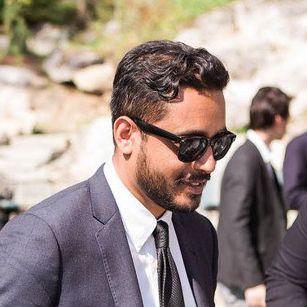

Hi I'm Vijay!

I'm a multidisciplinary designer with work ranging from designing digital and non-digital consumer/enterprise products, packaging design, advertising design, marketing strategy, and brand design/development.
I currently live in Sacramento, CA, with MY lovely wife Toni and cat Miss Kitty. In my free time I enjoy playing cooperative board games, making furniture, and hiking the beautiful hills of California.